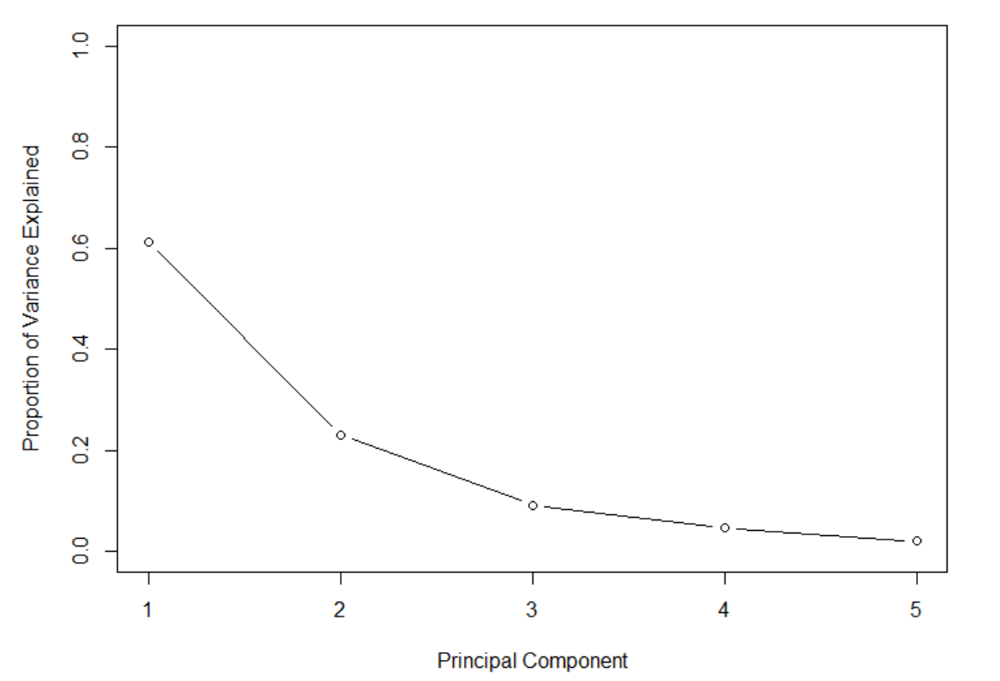

AYU - Individual Week 9
Problem 1 (SRM - Sample Question 5)
Consider the following statements:
I. Principal Component Analysis (PCA) provide low-dimensional linear surfaces that are closest to the observations.
The first principal component is the line in p-dimensional space that is closest to the observations.
PCA finds a low dimension representation of a dataset that contains as much variation as possible.
PCA serves as a tool for data visualization.
Determine which of the statements are correct.
- Statements I, II, and III only
- Statements I, II, and IV only
- Statements I, III, and IV only
- Statements II, III, and IV only
- Statements I, II, III, and IV are all correct
Problem 2 (SRM - Sample Question 6)
Consider the following statements:
I. The proportion of variance explained by an additional principal component never decreases as more principal components are added.
The cumulative proportion of variance explained never decreases as more principal components are added.
Using all possible principal components provides the best understanding of the data.
A scree plot provides a method for determining the number of principal components to use.
Determine which of the statements are correct.
- Statements I and II only
- Statements I and III only
- Statements I and IV only
- Statements II and III only
- Statements II and IV only
Problem 3 (SRM - Sample Question 30)
Principal component analysis is applied to a large data set with four variables. Loadings for the first four principal components are estimated.
Determine which of the following statements is/are true with respect the loadings. I. The loadings are unique.
For a given principal component, the sum of the squares of the loadings across the four variables is one.
Together, the four principal components explain 100% of the variance.
- None
- I and II only
- I and III only
- II and III only
- The correct answer is not given by (A), (B), (C), or (D)
Problem 4 (SRM - Sample Question 35)
Using the following scree plot, determine the minimum number of principal components that are needed to explain at least 80% of the variance of the original dataset.

- One
- Two
- Three
- Four
- It cannot be determined from the information given.
Problem 5 (SRM - Sample Question 37)
Analysts W, X, Y, and Z are each performing Principal Components Analysis on the same data set with three variables. They use different programs with their default settings and discover that they have different factor loadings for the first principal component. Their loadings are:
| Variable 1 | Variable 1 | Variable 1 | |
|---|---|---|---|
| W | -0.549 | -0.594 | 0.587 |
| X | -0.549 | 0.594 | 0.587 |
| Y | 0.549 | -0.594 | -0.587 |
| Z | 0.140 | -0.570 | -0.809 |
Determine which of the following is/are plausible explanations for the different loadings.
I. Loadings are unique up to a sign flip and hence X’s and Y’s programs could make different arbitrary sign choices.
Z’s program defaults to not scaling the variables while Y’s program defaults to scaling them.
Loadings are unique up to a sign flip and hence W’s and X’s programs could make different arbitrary sign choices.
- None
- I and II only
- I and III only
- II and III only
- The correct answer is not given by (A), (B), (C), or (D).